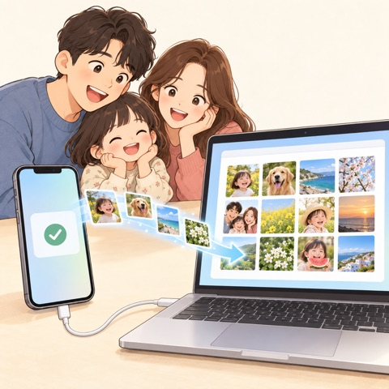
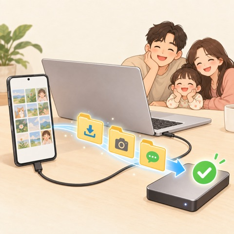
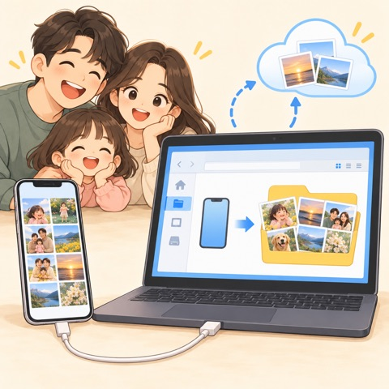
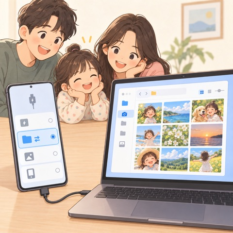

Caranya tergantung ponsel dan komputermu. Cari yang sesuai, lalu ikuti langkahnya. Masukkan folder hasil impor lewat Unggah foto yang diterima di Album Akhir Pekan, dan foto akan dirapikan per tanggal.
Mac

iPhone → Mac (kabel)
Sambungkan dengan kabel, buka kunci iPhone, lalu ketuk Percayai pada "Percayai Komputer Ini?".
Buka aplikasi Tangkap Gambar (Image Capture) di Mac (atau Foto → Impor), lalu pilih iPhone.
Pilih folder tujuan, lalu klik Unduh Semua.
Di Album Akhir Pekan, masukkan folder itu lewat Unggah foto yang diterima.
Tips Pengaturan iPhone → Foto → "Transfer ke Mac atau PC": Simpan Asli mempertahankan HEIC ("Otomatis" mengubahnya ke JPG). Live Photo datang sebagai foto + video pendek.
iPhone · Foto iCloud → Mac
Jika Optimalkan Penyimpanan iPhone aktif, ponsel hanya menyimpan salinan kecil — file aslinya ada di iCloud.
Di Mac, nyalakan Pengaturan Sistem → Akun Apple → iCloud → Foto (Akun Apple yang sama), lalu pilih foto di aplikasi Foto.
File → Ekspor → Ekspor Asli yang Tidak Diubah ke sebuah folder.
Masukkan folder itu lewat Unggah foto yang diterima.
Tips Ruang Mac tidak cukup? Kamu juga bisa memilih dan mengunduh dari iCloud.com → Foto.

Android → Mac
Hanya pertama kali: jalankan brew install --cask android-platform-tools di Terminal, lalu nyalakan Debugging USB di Opsi pengembang ponsel.
Sambungkan dengan kabel dan ketuk Izinkan debugging USB di ponsel.
Di tab Cadangan Ponsel Album Akhir Pekan, pilih folder (kamera, unduhan, WhatsApp, Telegram, KakaoTalk…) lalu pindahkan — foto baru otomatis masuk ke album.
Kalau mau, hapus dari ponsel — hanya file yang sudah terverifikasi.
Tips Hanya perlu foto? Atur mode USB ponsel ke Transfer foto (PTP) dan gunakan Tangkap Gambar di Mac.
Foto di Google Foto (iPhone & Android)
Klik Impor foto dari Google Photos di Album Akhir Pekan.
Pilih foto di jendela Google Foto yang terbuka.
Hanya foto yang kamu pilih yang diunduh dan dirapikan ke album per tanggal.
Tips Sesuai kebijakan Google, aplikasi hanya menerima foto yang kamu pilih. Untuk jumlah sangat banyak, gunakan Google Takeout.
Windows PC
Album Akhir Pekan untuk saat ini hanya tersedia di Mac (versi Windows sedang disiapkan). Di Windows, pindahkan dulu foto ke PC.

iPhone → PC Windows
Instal aplikasi Apple Devices dari Microsoft Store (driver koneksi iPhone).
Sambungkan dengan kabel dan ketuk Percayai di iPhone.
Aplikasi Foto Windows → Impor → ponsel, atau File Explorer → Apple iPhone → Internal Storage → DCIM, lalu salin.
Tips Pakai Foto iCloud? Ambil file aslinya dengan iCloud untuk Windows. Kalau HEIC tidak bisa dibuka, instal "HEIF Image Extensions" dari Microsoft Store, atau atur opsi transfer iPhone ke "Otomatis" (JPG).

Android → PC Windows
Sambungkan dengan kabel dan pilih Transfer file (MTP) di notifikasi USB ponsel.
File Explorer → ponselmu → Penyimpanan internal.
Salin DCIM/Camera (foto), folder WhatsApp dan Telegram (di Pictures atau Android/media), dan Download ke PC.
Tips Kamu juga bisa memakai Impor di aplikasi Foto Windows, Phone Link, atau Smart Switch untuk ponsel Samsung.